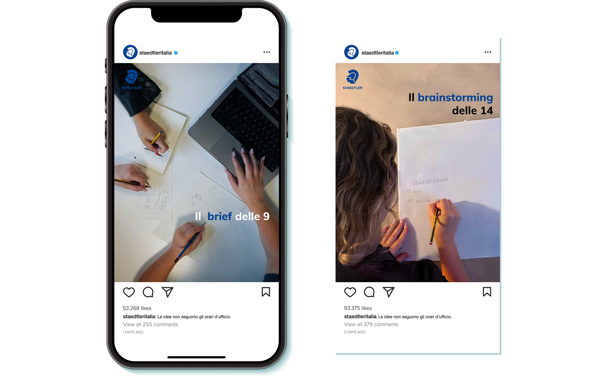

Staedtler - Menzione speciale
Branding e campagnePer il lancio della matita Norix abbiamo sviluppato una campagna social pensata per raccontare il prodotto attraverso l’esperienza quotidiana di noi creativi.
L’obiettivo non era mostrare una matita, ma il modo in cui accompagna il processo creativo nei ritmi reali di chi scrive e progetta ogni giorno.
NORIX non è un accessorio, ma un alleato costante, capace di inserirsi con naturalezza nelle esigenze e negli spazi della quotidianità creativa, attraverso una grafica pulita e un tone of voice diretto e autentico.

Concept: la routine del creativo

Norix, il comfort che libera la creatività

Concept: il futuro inizia con Norix!